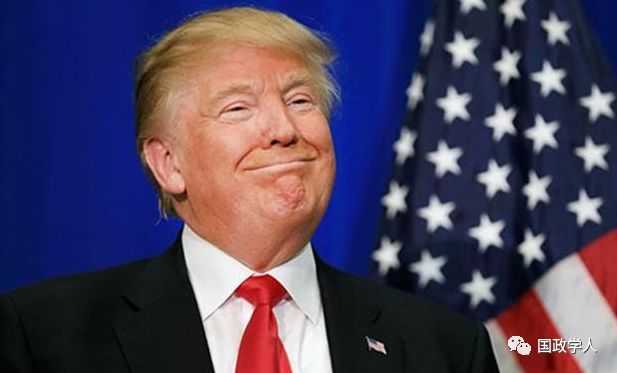

收录于合集

简 介
【 作者 】
王锦，中国现代国际关系研究院美国所副研究员，博士，主要研究美国外交。
**【期刊】 《现代国际关系》2018年第8期。
**
【整理】 崔宇涵
【审核】 庞林立
内容提要
特朗普的中东政策可概括为“一轴三径”，即以“联以、联沙、依靠同盟”为主轴，同时在遏制伊朗、反恐、推出“世纪协议”三条路径上发力。在其中东政策的背后，是特朗普加速全球收缩态势、回归美国“亲以反伊”外交传统及其浓重的个人风格和犹太身边人的影响。特朗普中东政策的推进未必顺利: 美国所依靠的联盟本身有脆弱性、伊朗问题前景不明、“世纪协议”将进一步动摇地区稳定、美欧裂痕也在加大。改变这些现状需要美国对中东更深的思考及更平衡的政策。
关键词： 特朗普 中东政策 美国外交
正 文

特朗普上台以来，在中东政策上有两次较为重大的决策，一次是承认耶路撒冷为以色列首都，并将美国驻以色列大使馆迁往耶路撒冷，另一次是退出奥巴马付出诸多外交努力的《联合行动计划》( JCPOA，简称“伊核协议”) 。这两大决策在整个中东地区乃至世界范围都产生极大震动。特朗普的中东政策是怎样的? 他实施如此政策的动因是什么?会产生哪些影响? 未来走势如何? 这些问题值得研究探讨。
一、特朗普 “一轴三径”的中东政策
中东在特朗普的眼中是“麻烦之地”( troubled place) ，而美国对于帮助该地区摆脱“麻烦”没有兴趣。但特朗普对于中东并非甩手不管，而是有他自己的计划和构想。
特朗普政府的《国家安全战略》写道: “美国在中东地区的目标是不让该地区成为伊斯兰恐怖分子的‘天堂’和‘发源地’，不让任何敌视美国的大国统治该地区，同时使该地区为稳定的全球能源市场作出贡献。美国认识到，无论是推动中东国家实现民主转型或是脱离中东，都无法使美国彻底从中东乱局脱身。”特朗普的中东政策可概括为 “一轴三径”，即以“联以、联沙、依靠同盟”为主轴，同时在遏制伊朗、反恐、推出“世纪协议”三条路径上发力， 以实现上述目标。
**特朗普的中东政策以 “联以、联沙、依靠同盟”为主轴。**奥巴马时期，美国的中东政策从根本上讲是要维持一种“离岸平衡”，利用国际规制约束伊朗，缓和与伊朗的关系，疏远与以色列、沙特的关系，同时在各力量间寻找平衡。而特朗普以“是敌还是友”“是赚还是亏”的二分法看待事物的倾向较强，他认为，巴以冲突不再是中东无法实现和平与繁荣的主要根源，目前中东麻烦的根源是“伊斯兰极端恐怖组织”及“伊朗的威胁”，“地区国家在应对共同威胁时开始与以色列找到越来越多的共同利益。通过与有改革思维的伙伴国家合作并鼓励地区伙伴之间开展合作，不仅是振兴我们的地区伙伴体系，而且还能推动实现地区稳定，实现符合美国利益的地区均势”。 为此，特朗普政府选择坚决地倒向了以色 列一边。 他在2017 年5 月访问以色列期间，曾戴犹太教帽子“基帕”在哭墙前静思，为首位在任期间访问哭墙的美国总统，显示其对以色列及犹太文化的支持。以色列1948 年建国至今，历任美国总统均未承认耶路撒冷为以色列首都，而且都不断推迟美国国会要求承认耶路撒冷和搬迁使馆期限。2017 年12 月，特朗普宣布承认耶路撒冷为以色列首都，并开启美国驻以色列使馆搬迁计划。2018 年3 月，以色列总理内塔尼亚胡访问美国，与美国围绕伊核、巴以等问题加强协调。美以关系旋即恢复至“史上最佳”状态。
在沙特问题上，特朗普将沙特视为美国在中东的支点国家。 2017 年5 月，特朗普首次出访即将地点定在了沙特，美国与沙特签署总价超过1000亿美元的军售大单，而且整个军售协议将持续10年，最终合同总金额很可能超过3000亿美元。2018 年3月，沙特王储小萨勒曼访美历时18天，与美政界、商界、教育界、能源界、科技界、娱乐界人士广泛接触，寻求美国全方位支持。特朗普也表示将继续支持沙特“2030愿景”，美沙同盟“正处于历史最好时期，而且会变得更好”。 美国已成功说服沙特等阿拉伯 **国家将反恐和应对伊朗置于巴勒斯坦问题之上，形成 “美国—以色列—沙特”轴心，与“俄罗斯—土耳其—伊朗”联盟在中东形成对峙局面。**此外，特朗普还加强了与另一位“老盟友”埃及的关系，并致力于提升美埃伙伴关系。2018年7月美国恢复了对埃及1.95亿美元的军事援助，以提高埃及应对安全挑战的能力。
特朗普不仅在行动上与盟友加强联系，他还希望盟友关系更加机制化。 沙特和以色列方面倡议，建立由美国和6个逊尼派穆斯林为主的阿拉伯国家，加上埃及和约旦组成新的安全和政治伙伴关系，共同应对伊朗和“伊斯兰极端主义”的威胁，该联盟的正式名称为 “中东战略联盟” (MESA) 。目前，特朗普正在推动这个被媒体称为“阿拉伯北约”的构想。该联盟将在导弹防御、军事训练、反恐等方面合作，并将加强地区经济和外交联系。据路透社报道，“中东战略联盟”将于2018年10月在华盛顿举行的美国与海湾国家峰会上作为讨论议题。通过推动建立“中东战略联盟”，美国希望从中东战略收缩、让盟国承担更多责任的意图更明显。
**特朗普中东政策的路径之一是遏制伊朗，限制伊朗核能力及避免伊朗坐大。在 “联以、联沙、依靠同盟”的基础上，遏制伊朗是特朗普中东政策的首要内容。**他在《国家安全战略》中将伊朗称为“流氓国家”，称“当今世界的苦难之地是违反自由和文明世界所有原则的流氓国家。伊朗政权在全世界支持恐怖主义，正在发展更先进的导弹，且有潜力恢复发展能够威胁美和伙伴的核武器。”特朗普认为，几乎中东所有问题背后都有伊朗的影子，无论是在叙利亚、也门还是黎巴嫩，因而他的整个中东政策都带有和伊朗对抗的烙印，不仅要剥夺伊朗发展核武器的手段，而且也要阻止它在中东获得优势地位。特朗普对奥巴马借伊核协议对伊朗“松绑”极为不满，多次指责伊核协议是“史上最糟糕的协议之一”，他还将遏制、拖垮伊朗作为中东政策主要目标及解决中东诸问题的症结所在。2017年10月，特朗普拒绝承认伊朗履行伊核协议，并宣布制裁伊朗伊斯兰革命卫队。2018年5月，特朗普不顾欧洲盟友和国际社会反对，毅然退出伊核协议，并宣布恢复对伊朗制裁。
特朗普的对伊战略，目前存在两手准备， 一是与伊朗签订一份 “更大、更好、更广阔的协议”，不仅要限制伊朗的核能力，而是希望让伊朗加入到一个“新安全架构”的谈判中来，既包括核问题，也包括导弹、支持恐怖主义及其在叙利亚和也门的活动等。为此，美国国务卿蓬佩奥于2018年5月提出应对伊朗的“B计划”，包括12条新要求，即向国际原子能机构报告所有与核计划相关的军事方面的情况，永久、可核查性地放弃其核计划; 停止所有铀浓缩行为，包括关闭重水反应堆; 允许国际原子能机构无条件进入其境内所有相关地点; 停止扩散弹道导弹、停止发射或发展核导系统; 释放所有被扣押的美国公民; 停止支持中东“恐怖组织”; 尊重伊拉克政府的主权; 停止对胡塞武装的军事支持; 从叙利亚全境撤出所有受伊朗指挥的军事力量; 停止对阿富汗以及该地区的塔利班和其他“恐怖分子”的支持; 停止伊斯兰革命卫队下属的“圣城军”对世界各地的“恐怖分子”的支持; 停止威胁邻国的行为等。
而迫使伊朗满足上述要求的方法就是 制裁 。美国计划8 月初开始恢复对伊朗的严厉制裁，主要针对伊朗的汽车业、贸易、黄金和其他主要金属。第二期对伊朗的制裁将于11 月开始，主要集中于伊朗的能源业、与石油有关的交易以及与伊朗央行的交易。美国国务院政策计划办公室主任布莱恩·霍克称:“在能源制裁方面，我们的计划是向伊朗政权施加压力，将其原油销售的收入降为零。”无论是特朗普对伊朗政权隔空威胁，还是声称愿与伊朗“无条件”对话，都是与制裁相配合的手段，特朗普希望通过“极限施压”的方式，迫使伊朗领导人走上谈判桌，这与他施压金正恩的方式类似。他认为，随着伊朗的石油产量下降，出口收入也将下降，伊朗将被隔绝于全球金融体系之外。当伊朗经济摇摇欲坠时，伊朗就会作出妥协，满足美国“愿望清单”上的要求，而他也会“清史留名”。
**而另一手准备，就是如果伊朗恢复其核计划，特朗普及其 “战争内阁”将支持甚至协助以色列采取军事行动来阻止这件事的发生。**以色列与伊朗近期已经在叙利亚直接交手，两者不仅在叙利亚有潜在的战争风险，在核问题上，以色列更是多次表示要用军事手段打掉伊朗发展核武器的能力。美国国务卿蓬佩奥、国家安全顾问博尔顿都主张采取“先发制人”打击粉碎伊核计划。据澳大利亚官员表示，特朗普已准备好对伊朗实施空中打击。
**特朗普中东政策的路径之二是打击 “伊斯兰极端主义”。在中东，特朗普的反恐政策不是以美国为主打击“伊斯兰极端主义”，而是继续依靠盟友，主要通过盟友的力量反恐，美国仅在关键时候实施空中打击和远程攻击。**2017年5月，特朗普政府出台“反恐新战略”草稿，明确表示“我们需要加强针对国际圣战组织的行动，但同时也要减低美国为达成反恐目标所付出的血汗和金钱。我们将避免采取代价高的大型军事干预行动，同时要求盟国负起更多反恐责任。”同年12月的《国家安全战略》亦明确阐述: “针对‘伊斯兰国’、基地组织及其附属组织的行动证明，美国将提高伙伴国反恐能力，并将继续采取直接行动打击恐怖分子及其支援力量，使恐怖分子更难密谋恐怖袭击”，“发展持久的联盟，巩固我们在阿富汗、伊拉克、叙利亚等地取得的成果”，“鉴于美国盟友和伙伴国也是恐怖分子袭击目标，它们也将继续分担打击恐怖组织的责任”。
特朗普呼吁北约盟友承担更大的反恐责任，为美国反恐行动提供更多的人力、信息和资金; 力邀沙特为中东反恐作出更大贡献，加强与海湾合作委员会在打击“伊斯兰国”和“基地”组织方面的合作和协调。2017年，美国依靠其盟友组成的反“伊斯兰国”联盟，收复叙利亚和伊拉克境内被“伊斯兰国”占领的核心城镇，全年总计夺回超过6.15万平方公里的土地，一度被“伊斯兰国”占据的98%的土地得到“解放”。“伊斯兰国”在叙、伊覆灭是特朗普政府的一项巨大的胜利。
美国对中东“伊斯兰极端主义”以精准打击为主，避免陷入高代价、大规模的军事干预，再次被拖入战争。2018年4月，美国指责叙利亚政府军使用“化学武器”，美军动用战斧巡航导弹对叙利亚发用袭击，英国、法国也同时参与，总共发射105枚导弹，未有更进一步军事动作。美国目前在叙利亚、伊拉克的军事任务，已经由反恐转向提供支持。美国在叙利亚保持2000 名美军，主要是为“叙利亚民主军”及其他当地军事力量做顾问; 在伊拉克有5200名美军，主要向伊拉克政府军和警察提供训练和情报支持。叙利亚目前更多的是以色列与伊朗对峙的战场，及美国推回俄罗斯大国影响力的实验场。
**特朗普中东政策的路径之三是推出中东和平 “世纪计划”。特朗普最有野心和宏大的构想，是推出中东和平的“世纪计划”。**他刚一就职就抛开有关巴以冲突“两国方案”的国际共识，称实现巴以和平不限于“两国方案”，美国将努力促成巴以达成和平协议。巴以问题是中东和平的症结，历任美国总统都想在这个问题上有所成就，但都铩羽而归，特朗普之所以也要在这个“难啃的骨头”上试一试，是因为他自信地认为他比其所有失败的前任更有能力取得成功。特朗普派自己的女婿、白宫高级顾问库什纳主责巴以和平方案。库什纳和国际谈判特别代表格林布拉特在一年多的时间里多次赴中东，磋商巴以和平新方案。
2017年12月，特朗普承认耶路撒冷为以色列首都，开美国外交先例。特朗普认为，美国对耶路撒冷的承认并未确定其“最终地位”，不会从根本上改变美国政策，此次宣布是对以色列历史和现状的承认，美国对以色列“更清晰、更坚定”的立场“可以带来更多和平”。此决定一出，立即引起巴勒斯坦方面的极大反应。巴方认为美国已失去“公正调解人”信誉，宣布中断和谈，并拒绝与特朗普团队接触。而美方仍旧执意推进“中东和平计划”。2018年6月，特朗普与约旦国王阿卜杜拉会面，讨论停滞的巴以磋商，特朗普称他的巴以和平计划是一项“世纪协议”，并称中东和平计划能否成功取决于同盟国家的支持。库什纳称，不管有没有巴勒斯坦方面的参与，特朗普政府都将推进这项和平计划。
根据媒体报道，特朗普的“世纪计划”可能包括以下几点: 一是承认仅占约旦河西岸近一半的巴勒斯坦临时边界，巴以双方就以色列在西岸和东耶路撒冷的非法定居点进行谈判; 二是削弱加沙地带与埃及的边界，建立一个工业带，允许更多的巴勒斯人去西奈半岛北部工作和生活; 三是可能承认以色列对戈兰高地的主权; 四是可能为未来的巴勒斯坦国的“首都”寻找替代地点，据称选中耶路撒冷以东4公里的阿布迪斯镇; 五是建立一条从阿布迪斯到阿克萨清真寺的狭窄走廊，便于巴勒斯坦人祈祷。此外，该计划还包括促进区域经济一体化，增加所有人的机会和繁荣，包括约旦、埃及及整个区域。
二、特朗普中东政策的主要动因
特朗普的中东政策之所以以“联以、联沙、依靠同盟”为主轴，利用同盟在遏制伊朗、反恐、推出“世纪协议”三条路径上发力，既雄心勃勃又吝于付出，主要原因有以下几点：
首先，美国加速全球收缩态势是特朗普实施其中东政策构想的客观因素。 奥巴马时期的“幕后领导”“不做蠢事”的外交实践其实已经拉开美国战略收缩的序幕。美国保守派智库哈德逊研究所所长肯尼斯·韦恩斯坦在2016年7月就曾表示: “英国脱欧之外的另一个‘退出’正在悄然发生，这就是美国正在从历经70年建立和培养起来的全球领导体制及其联盟结构中退出。”特朗普将美国战略收缩做得更直白、更彻底。特朗普用“美国优先”的口号，让美国从一个虽不完美却仍“热心”的世界领导者，向一个以自私为主的超级大国的变化加速了。
在特朗普看来，当今世界有很多国家从美国维持的相对和平与繁荣的世界秩序中获益，这些获益者应该为维持这一秩序作出有意义的贡献，美国应该更加关注自身的国家利益，而其他国家需要做得更多。 美国应明智地承认力量有限，承认有必要分担义务和责任来应对复杂的世界。这种承认不仅不会破坏美国的领导地位，还可以使美国更加聚焦于维持其经济和军力的领先地位。因而美国的盟国应自己承担安保开销，并承担起帮助美国实现地区安全目标的责任。与之相对应，特朗普对国际机制的认知也与以往总统有较大不同。特朗普对国际机制有根深蒂固的不信任，他认为多边机构和规则就是为了给美国“下套”，美国并未从中获益却付出良多，因而他领导了系列“退出”，包括退出“跨太平洋伙伴关系协定”(TPP) 、“巴黎协定”、联合国教科文组织、伊核协议、联合国人权理事会等，他希望以有利于美国的方式改变世界体系的规则。随着美国全球态势的收缩，美国对威胁的认知也发生了变化。 美国从视恐怖主义为主要威胁，转为视中俄为主要威胁，更加希望腾出手来聚焦大国竞争，由地区国家帮助实现反恐、遏制伊朗等任务。
其次，特朗普的中东政策构想是对美国外交传统的回归。 从特朗普的外交战略来看，他虽然无视传统观念，提出修正国际秩序，但其外交政策内核“美国优先”战略及“让美国再次伟大”的复兴战略，与 提倡 “国家利益”的杰克逊主义如出一辙，是对美国传统外交学派的回归。杰克逊主义是美国四大外交政策学派之一，另外三个党派是 汉密尔顿的国际贸易保护传统、威尔逊捍卫人权的理想主义传统和杰斐逊的孤立主义传统 。 杰克逊主义属于坚持国家现实主义，在对外政策中不以 “道义”为准绳，主张使用军事力量。
**特朗普退出伊核协议的举动，根植于美国长期反对伊朗 “后革命时代”的政治体系的对伊政策。美国领导人将伊朗视为对美国主导的地区安全秩序的不可调和的挑战。**自1979年伊朗伊斯兰革命以来，美国对伊朗的总体战略就是 对伊朗施加最大的压力使其边缘化。 博尔顿在《华盛顿邮报》写道:“退出伊核协议扭转了危险的政策，使美国重新走上应对敌人侵略性和敌对行为，同时加强与盟友和伙伴关系的道路。”而支持以色列也是美国白人基督教福音派的传统。自20世纪70年代以来，对以色列的支持已成为保守的基督教和共和党的信条。他们认为，美国需要支持和保护以色列，以保持上帝“好的一面”，并确保国家获得祝福。2016年7月，共和党竞选纲领不再支持建立巴勒斯坦国，而是声称共和党“对以色列和耶路撒冷的明确支持”，称“对以色列的支持是‘美国主义’的表现，我们政府有责任推行反映美国人的美国与以色列亲密无间的强烈愿望的政策”，“我们拒绝以色列是占领者的错误理念”，“我们承认耶路撒冷是犹太国家永恒不可分割的首都，并特别承认‘抵制，撤资和制裁运动’(BDS) 本质上是反犹主义，并试图摧毁以色列”。特朗普的中东政策正是共和党竞选纲领的忠实反映。
**再次，特朗普雄心勃勃的中东政策也体现了其浓重的个人风格及犹太身边人的影响。特朗普与奥巴马处事风格迥异，外交道路也存在较大不同，造成了他一定程度上的 “逢奥必反”。**特朗普上台后，对奥巴马的全部重要项目都提出了质疑。“凡是奥巴马的协议，都要废除”，这似乎已成为特朗普的执政信条，也是特朗普退出伊核协议，及重新拉近美国与沙特和以色列关系的动因之一。特朗普对以色列有一种亲近感，对伊朗持歧视和怀疑态度，对什叶派穆斯林不信任，认为伊朗是中东诸问题及混乱的根源，而奥巴马则把伊朗作为解决方案的一部分。在对待多边组织和协议的问题上，奥巴马相信多边主义，懂得美国在国际上负有责任，因而倾向于以多边框架解决伊核问题，而特朗普则不信任多边协议，认为并不存在所谓美国的责任，一切都是美国应当享有的权利。
特朗普的个性也是造就他中东构想的原因之一。 《纽约书评》文章称，自恋是特朗普最显著的性格特征，他对自己是“最优秀、最聪明和最成功的人士”深信不疑。他极度渴望名声，追求高回报，同时又敢于冒险，敢于用强，他认为别人都不敢试的事他敢于尝试，别人都做不好的事他可以做到。这种想法使他认为奥巴马及其他前任们“太笨”，他一定能在对伊朗问题及中东和平问题上做得更好。按此逻辑，美朝如果能达成协议，将是“完美的协议”，因为协议是由他自己推动达成的; 美伊如果能见面会谈，将会通向“更大、更好、更广阔的协议”，因为会面和谈判是他促成的; 中东和谈“世纪协议”如果能推出，将铺平中东和平的道路，因为协议是他支持的。特朗普对此较为自信，想全面推进自己擅长的“交易外交”，以增加自己的“外交遗产”。
**此外，特朗普身边还聚拢了一批 “亲以”的犹太人，对特朗普的中东政策制定发挥关键作用。**美国驻以色列大使大卫·弗里德曼与特朗普关系密切，曾任“特朗普组织”董事长兼总裁和特朗普竞选顾问。弗里德曼主张美国结束“两国论”的论调，还辩称以色列“只占了约旦河西岸的2%”。特朗普的竞选“大总管”格林布拉特是特朗普“最忠实的随从”，策划特朗普的竞选全过程，目前为特朗普政府国际谈判高级代表，负责制定美国对以色列政策。格林布拉特不仅坚持定居点是合法的、不是和平的障碍，而且他自己也曾是以色列定居点居民。特朗普女婿库什纳主导巴以和谈谈判，他不仅是以色列总理内塔尼亚胡的朋友，与以色列金融公司有生意联系，他的家族还资助以色列定居点。赌场大亨阿德尔森被媒体称作“站在以色列右翼身后的美国人”，曾在特朗普竞选期间向其政治行动委员会捐赠2500万美元。在这样一支团队的辅佐下，特朗普推出向以色列一边倒的政策在所难免。
三、特朗普中东政策的前景
特朗普的中东政策能否如其所愿顺利推进并实现，还面临许多不确定性。
**首先，美国构建的 “美国—以色列—沙特”同盟本身还存在脆弱性。**由于急于构建“以色列—务实逊尼派轴心”遏制伊朗，特朗普放弃在海湾国家与卡塔尔断交问题上的中立，对沙特单方面支持，导致沙特王储小萨勒曼的强硬路线更加变本加厉。沙特的国内政局也未如美国认为的那么平静可控，小萨勒曼主导的“反腐风暴”可能引发一些沙特权贵的反扑，沙特国王身体状况堪忧，一旦乱世，小萨勒曼政权能否独挑大梁仍未可知。而在“世纪协议”问题上，美国虽就该问题与沙特、约旦频繁沟通，沙特王储小萨勒曼还是主要的背后推动力，但美国明显偏袒以色列的方案伤害阿拉伯人民的感情，有“阿拉伯之春”殷鉴在前，沙特、约旦等国领导层必须小心处理国内民众情绪，把确保政权稳定作为首要任务，对美国的计划不敢鼎力相扶，联盟的一致性必然大打折扣。
以色列与美国也并非“心心相印”。以色列内塔尼亚胡政府对于高举“美国优先”大旗的特朗普政府的“内向型”姿态感到不满和不安。出于“让美国再次伟大”的需要，特朗普更加关注国内经济和国际贸易，美国将重心逐渐转向印太也已是既定趋势，而以色列并不愿美国在中东实施战略收缩。在这个本质问题上的分歧，可能使得以色列在未来不停地将美国“拉回”中东。而且面对沙特和以色列对与伊朗战争的“跃跃欲试”，美国则竭力避免可能会让其卷入的战争，“美—以—沙”同盟未来还需加强内部协调。
其次，伊朗问题前景不明。 特朗普退出伊核协议，使伊朗问题前景更加不明朗，主要有以下几个问题: 一是严重影响了伊朗政权的内部平衡，使从一开 始就拒绝该协议的伊朗保守势力受益。 伊朗总统鲁哈尼在国内受到压力，许多伊朗人都感到失望，尽管该国一直遵守协议的条款，但是他们希望得到的经济利益远未实现。保守派认为自己对美国的根本性不信任得到了证实: 无论伊朗释放多少善意，美国是从根本上反对伊朗追求政治、经济和安全的独立，美国是希望伊朗政权更迭的。而强硬派的得势使美国更难阻止伊朗在也门、叙利亚和黎巴嫩等地对代理人的军事支持。
二是造成美伊的全面对抗。 特朗普的对伊政策不仅未缓和地区紧张局势，反而将美伊紧张关系升级到了前所未有的层面，美伊之间的互信已被破坏。据伊朗伊斯兰共和国通讯社报道，伊朗最高领袖哈梅内伊表示，美国和伊朗现政权之间存在“根本性和基础性的问题”，与美国进行任何谈判或建立关系是“明显的错误”。在此氛围下，现在伊朗政府内如果有人试图与特朗普接触，无异于自毁政治前途。
三是伊核协议主要框架已经坍塌。 伊核协议主要内容是美国停止对伊朗涉及核项目的制裁，换取伊朗限制自身核能力并接受核查。目前，美国对伊朗汽车、黄金及稀有金属、铝铁制品、商用飞机、煤炭和美元交易的制裁已恢复，对伊朗能源领域的制裁将于11月恢复。欧盟虽宣布启动“拒止条款”，但面对美国的“次级制裁”，欧洲公司很难做到既与伊朗做生意，又不失去美国市场。目前伊朗与英、法、德、俄、中虽然仍在全力维护核协议框架，但实际意义已不大，协议会在经济压力下自行解体。哈梅内伊表示，一旦核协议崩溃，伊朗将准备提高铀浓缩能力。
四是可能引发地区核竞赛。 伊核协议的意义不仅在于短期封锁伊核武器道路，还在于抑制受核开发诱惑的地区各国。沙特已开始要求美国允许其拥有独立进行铀浓缩活动的权利，阿联酋和土耳其正在建设核电站，埃及等国也计划在俄罗斯支援下建设核电站。各国都意识到了核技术具有的地缘政治意义。美国在中东地区的影响力已大幅下降，一旦核开发的多米诺效应出现，美国很难使中东回到原来状态。此外，以色列与伊朗矛盾可能升级。就在特朗普宣布退出伊核协议不久，以色列军队即用导弹攻击了叙利亚大马士革附近的伊朗军事设施。以色列已暗中与驻扎在叙利亚的革命卫队及伊朗雇佣军较量，且战争可能在未来升级。控制全局的美国不再发挥作用，则对立的国家间产生直接冲突的风险增大。
**再次， “世纪协议”将进一步动摇地区稳定。**由于美国的中期选举，“世纪协议”公布的日期可能进一步推迟。特朗普政府选择承认耶路撒冷为以色列的首都、无条件支持以色列，就已经决定了他推出的“世纪协议”只能是一份偏袒以色列的不公平协议。在巴以和谈中，耶路撒冷最终地位问题涉及犹太人和阿拉伯人世俗权益，而且牵涉全世界穆斯林、犹太和基督教徒的宗教感情，最为敏感、复杂，也极易引发冲突。特朗普“迁馆”举动触碰阿拉伯人和穆斯林的敏感神经，削弱巴勒斯坦自治政府主席阿巴斯等伊斯兰稳健派的地位，增强与美国敌对的伊朗和伊斯兰激进组织力量，刺激反美情绪，给中东激进和恐怖组织发动袭击留下口实。美国经此一役还使巴勒斯坦对美方彻底失望，转向谋求欧盟做“新调解人”，但欧盟在巴以问题上作用有限。阿巴斯指出，“世纪协议”是世纪的“一记掌掴”，巴勒斯坦不会接受。
美国《中东政策》杂志援引记者迈克尔·沃尔夫的话称，特朗普对中东的看法可以简化为三个要素: 可以合作的力量、不能合作的力量及可以无视或牺牲的力量。以色列、沙特属于第一类，伊朗属于第二类，而巴勒斯坦则属于第三类。特朗普推进其中东和平计划，其实一直未将巴勒斯坦利益置于考虑，他考虑更多的是美国与以色列和沙特的联盟，而非巴勒斯坦这种“弱者”。他在中东和平协议一事上较为偏执，在巴方缺席的情况下，仍旧对自己的“独裁”方案非常自信，但这可能招致“弱者”的奋力反抗。巴以和谈陷入僵局，加沙地区的爆炸声再次响起，未来围绕耶路撒冷及领土问题的矛盾和冲突将时有发生，甚至有可能酿成旷日持久的流血冲突。
**最后，美欧裂痕也在增大。特朗普退出伊核协议及即将公布的 “世纪协议”，对美国外交政策的最大副作用就是造成了美欧之间的裂痕。**欧洲对外关系委员会资深政策研究员埃莉·杰兰马耶说: “在伊朗问题上，欧洲人的路线与美国人的路线出现了明显分歧: 欧洲人走上了和解的道路，美国则在考虑采取孤立主义和遏制的政策。”欧洲人认为伊核协议对他们的国家安全至关重要，因为它能遏制伊朗等国在临近的中东地区制造核突破，而且还让欧洲企业获得了与伊朗做生意的机会，所以欧洲千方百计安抚伊朗使之留在协议中。美国《外交政策》杂志以《大西洋联盟( 1945－2018) 安息了》为题写道，“随着退出伊朗核协议，特朗普向棺材上楔入了最后一颗钉子。”美国的单方面退出再次提醒欧洲国家，一味迎合美国的制裁要求并没有促进跨大西洋关系的坦诚和平等，如果不想失去负责任的国际事务参与者的信誉，欧洲国家必须更多从自身利益和价值观出发考虑问题，不做美国的附庸。欧洲对美国的制裁启动了“拒止条款”，制止欧洲公司未经准许而遵守美国的制裁令，欧盟还阻止美国法庭就相关制裁所采取的任何行动在欧洲生效。今后美欧围绕伊核协议及制裁问题还将有一番博弈。而伊朗也可利用美欧间的罅隙，与欧洲合作，获得喘息空间。
在中东和平进程问题上，美欧的立场也并不相同。 **由于地缘相近、殖民历史、能源依赖及两次大战渊源等，欧洲对中东有独特的情怀，是中东稳定的倡导者。欧洲不仅在宗教上与以色列没有特殊情感，反而存在 “反犹”情绪，与美国对中东敌友的划分有分歧，反对美国过分偏袒以色列。**针对美国提出的“世纪计划”，欧洲更担心不平等的协议引起巴勒斯坦及阿拉伯世界的不稳定，使欧洲深受其害。
综上，特朗普的中东政策并不能帮助美国实现其在《国家安全战略》中所陈述的地区目标，反而存在很多隐患，加剧地区不稳。 从更大的视角来看，美国在特朗普治下加速放弃自己领导角色，退出伊核协议等主张不仅破坏国际社会规则、蔑视国际法、打破脆弱的平衡、扰乱秩序等，还对核不扩散体系造成负面影响。特朗普所奉行的“交易外交”在商业上或许有效，但在外交上却过分注重自身利益和政策构想，未考虑片面行动可能给盟友及其他国家造成的影响，对手也可能对此做出过激反应，使危机升级。
目前中东的局势较为危险，不仅包括叙利亚危机，还包括伊朗与沙特、以色列的严重对立、也门内战、以色列与巴勒斯坦的对立等，小事件日积月累可能引起连锁反应。无论是遏制伊朗还是推动不公正的和平计划，都会牵一发而动全身，加剧地区不稳局势。基辛格指出，美国要想实现逊尼派国家和以色列抗衡伊朗的图景，必须要“扮演平衡者的角色”，“美国需要与相互竞争的各方保持比彼此之间更紧密的关系，不能偏向任何一方的战略，尤其是极端的战略”。改变目前的状态需要美国考虑对中东更深的思考，及更公平的政策。
特朗普想通过依靠盟友，尽快地从中东“甩包袱”，继续奥巴马的战略重心东移，转向“印太”。但同样，他的“甩包袱”、战略收缩也不可能很顺利，如中东乱局对美国在中东的利益造成根本性的威胁，美国仍旧会重新干预。
更多阅读
国政学人 （ID：guozhengxueren)
为方便学人及时阅读高质量文章
别忘把国政学人设置 星标 哦~